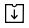

Managing Documents¶
Documents¶
Documents Documents are stored in the following three menus according to the document status:
In progress: Documents In progress View the list of documents you have created or signed/approved that are incomplete.
Action required: Documents Action required View the list of documents you have saved as a draft, requested by other members for you to sign or approve, or sent to external recipients but have yet to be signed.
Completed: Documents Completed View the list of all completed documents among the documents that you have created or participated in.
By using these menus, you can easily view the status and history of each document, find the documents you want by filtering and searching, resend documents, void/reject documents that have yet to be completed in the workflow, and edit draft documents.
All documents and related activities are stored in the Documents menus, and you can view detailed information about the document status and history.
Aside from the three document menus, there is another menu for managing documents.
Manage documents: Manage documents View and manage all documents created from a template in which you have been given access permission.
Note
The company administrator can view and manage all documents in the company.
The three Documents menus and the Manage documents menu are laid out almost the same.
Note
The layout of the Documents menus are very similar to each other, but the documents that are displayed differ according to the document status or granted permission to users.
Each Documents menu consists of the following five sections:
Menu and home icon, and document menu name
You can go to another menu by clicking the menu icon (
 ) or go
to the dashboard by clicking the home icon (
) or go
to the dashboard by clicking the home icon ( ). You can also
see the name of the documents menu you are currently viewing.
). You can also
see the name of the documents menu you are currently viewing.Template category combo box, document status filter combo box, and search box
You can view documents by the selected template category and filter documents by document status.
In addition to performing searches using keywords, you can also use advanced methods such as searching by name + contents, document ID, date, and many more.
Document list
Up to 20 documents are listed per page and you can view the documents on other pages by clicking the page numbers at the bottom.
The information of each document such as the document status, name, step, creator, created date, processed date, and document number is provided in columns in the document list. You can also change the column information displayed. Click the column icon (
 )
displayed at the top right corner of the page, and then check the
columns you want to display in the column check
box.
)
displayed at the top right corner of the page, and then check the
columns you want to display in the column check
box.You can also perform actions on a document such as reviewing, previewing, correcting, voiding, resending, and deleting a document.
-
You can check the documents status and history.
In the Document status tab, you can see what happens to a document in each step of the workflow.
In the History tab, you can see the activities of the document creator and recipients from document creation to completion.
The column selection icon,document downloadicon, anddeleteicon
Clicking the column selection icon (
) displays the column
types which you can check to select which columns will be displayed
in the document list.Clicking the download icon () allows to select the documents in the list you want to download. You can select multiple documents to download at once and choose the file type including the PDF of the completed documents, audit certificate, and CSV of selected fields.
Note that the delete icon (
 ) is disabled in the three
document menus, but is enabled in the Manage documents menu.
) is disabled in the three
document menus, but is enabled in the Manage documents menu.Note
Documents can be deleted only in the Manage documents menu and you can only delete documents in which you have document management permission. The company administrator or the template managers of a template can grant you document management permission for all documents created from a template by going to Manage templates > Template settings > Set permissions > Document management. Document management permission can be set for each template. Members with this permission can open, delete, and download documents (PDF, CSV) created from this template in the Manage documents menu.
Template Category Combo Box, Document Status Filter Combo Box, and Search Box¶
The template category combo box, document status filter combo box, and search box are located at the top left side of the Documents menus and the Manage documents menu.
‘In progress’, ‘Action required’, and ‘Completed’ menus
In these menus, the template category combo box, document status filter combo box, and search box are also located at the top left side of the screen.
‘Manage documents’
In this menu, the template category combo box, document status filter combo box, and search box are located at the top left side of the screen. However, the document status filter combo box contains one additional menu, ‘Voided’, compared to the three documents menus.
Template category combo box Documents Template category combo box
By using the template category combo box, you can display the list of documents by template category by selecting the desired template available in the Manage templates menu.
Clicking the X icon of the template category combo displays the templates according to categories as shown below:

Template Category Combo Box¶
Document status filter combo box Documents Document status filter combo box
In addition to doing searches using keywords, you can also use advanced methods such as searching by name + contents, document ID, date, and filtering by document status.
You can also search for field values in documents in detail by using a custom filter. As well, by using a custom filter, you can search for documents according to the range of numbers and dates.
The following table describes the filters that can be used for performing searches. However, custom filters can only be used in the Manage documents and Completed menus.
In progress |
Action required |
Completed |
Manage documents |
|---|---|---|---|
Name + contents |
Name + content |
Name + content |
Name + content |
Name |
Name |
Name |
Name |
Contents |
Contents |
Contents |
Contents |
Document ID |
Document ID |
Document ID |
Document ID |
Document number |
Document number |
Document number |
Document number |
Template name |
Template name |
Step |
Step |
Step |
Step |
Created by |
Created by |
Created by |
Created by |
Created on |
Created on |
Created on |
Created on |
Processed by |
Processed by |
Processed by |
Requested by |
Processed on |
Processed on |
Processed on |
Requested on |
Custom Filter |
Custom Filter |
Days passed |
Using the custom filter Documents Using the custom filter
Select Custom Filter in the Advanced search combo box.
2. Select the field name, field type (keyword, range, or period), and search value.
The default value of the field name is an empty value.
Make sure to manually enter the display name of the field in the document you want to search for. You can view the display name of the field in the Template settings > Field setting menu.
Note
1. Documents may not be searched if you search for a document by entering a field name that does not exist.
2. You cannot enter special characters in the field name (“, ‘, ;, <, >, \).
3. Empty spaces before and after the field name are all removed. E.g. “ Time off ” “Time off”
4. If you click on a filter you added, then the field name, field type, and search value will be displayed. For example, if you have previously added a filter with the field name of ‘years worked’, field type of ‘Range’, and field search value of ‘5~10’, then if you click on the filter, then all its values will be displayed including the field name (years worked), field type (Range), and search value (5~10).
You can choose one of Keyword, Range, and Period for the field type. Keyword is set as the default.
Note that the input boxes displayed differ according to the field type selected.
Field type |
Input box 1 |
Input box 2 |
|---|---|---|
Keyword |
Text |
|
Range |
Min |
Max |
Period |
Start date |
End date |
Keyword
Used for searching multiple values by using a comma (,) as the delimiter. The default value is empty.
When used, it searches for the text entered. In other words, it searches for documents that contain at least one of the multiple search values entered. For example, in the case where the Field name = fruit, Field type = keyword, search values = strawberries, apple, then documents that contain at least one of ‘strawberries’ and ‘apple’ are searched.
Range
Used for searching values of range such as numbers or dates. E.g. number: 100 ~ 200, period: 01/01/2019 ~ 06/30/2019
When used, it searches for values between the min and max. If you only enter the min, then only the values larger than the min value are searched while if you only enter the max, then only the values smaller than the max are searched. E.g. salary: 1000 ~ , salary: ~ 5000.
Period
Selects the period in the calendar displayed. The default value of the period length is set to one week.
Searches for the date between the start and end date selected.
3. Click the add search ( ) button to add the keyword entered.
Documents are searched according to the conditions set.
) button to add the keyword entered.
Documents are searched according to the conditions set.
Note
1. You can add multiple custom filters, and can modify/delete the custom filters you added.
You cannot add multiple custom filters with duplicate field names.
3. If you modify a predefined custom filter, then the field type and search values are updated with the most recently entered values.
Displaying search keywords and modifying/deleting them
The search keyword is added in the form of field name: value.
Keyword: “employment type: permanent, contract”
Range: “years worked: 5~10”
Period “contractperiod_yymmdd: 2018-01-01~2018-12-31”
2. Modify the custom filter by selecting a search keyword added. When modifying, the Advanced filter item is changed to Customer filter, and the selected filter’s field name, field type, and search value are displayed.
3. Added keywords can be deleted by clicking the X icon on the right.
Document Status and History¶
If you select a document in the document list, you can view the status and history of that document on the right side of the screen.
In the Document status tab, you can see when and what happens to a document in each step of the workflow. In the History tab, you can see the activities of the document creator and recipients from document creation to completion.

Document Status Tab¶

History Tab¶
Document Download Documents Document download¶
Documents created in eformsign can be safely stored for long periods of time.
All documents are stored in a file format for long-term storage (PDF/A) and only members with the document management permission can open and delete them.
1. Click the download icon ( ) on the right side of the document
list.
) on the right side of the document
list.
2. Select the document to be downloaded, and then click the Download button.

Document Download Pop-up¶
Note
CSV files can also be downloaded in the Download pop-up where PDF files can be downloaded. Select CSV download in the pop-up and check the fields (columns) to be downloaded and then click the Download button.
Deleting Documents¶
In eformsign, only members with document management permission can delete documents.
1. Click the delete icon () on the right side of the document
list.
Select the document and then click the Delete button.
3. Click the Yes button in the Delete pop-up window to delete the document.

{kind=link}
{kind=link}
{kind=link}
{kind=link}
Creating New Documents¶
You can create new documents by using uploaded templates.
Note
Members and groups can only create documents from templates in which they are given template usage permission.
Creating a new document
Go to the New document menu.
2. Click the create icon( ) of the template you want to create a
document from.
) of the template you want to create a
document from.
{kind=link}
3. Create a document, and then click the Complete or Request button at the top right corner of the screen.
Note
Different buttons are displayed at the top right corner of the screen according to the workflow set in the template.
Send in Bulk¶
Documents Send in bulk You can send multiple documents at once by using the Send in bulk feature. Also, you can preview the documents before sending them to recipients.
Note
This action requires either one of document management or company administrator permission.
Send in bulk
Go to the New document menu.
2. Click the send in bulk icon of the template you want to create documents from.
{kind=link}
Enter the values in the columns displayed on the screen.
{kind=link}
Note
Each column of the table contains all the fields of a document. The IDs of components (which are fields in a template) are shown as the name of each column. The last row of the first column (No.) indicates the number of documents to be created.
Tables are filled in a similar way as in Excel. You can double-click on each cell to enter value and right-click on the mouse to add or delete columns. The value entered in a cell can be copied and pasted, and dragged to another cell.
4. Click the Preview button on the top right corner of the screen to view the documents you created and then click the Create button to send the documents.
Note
If there is an external process step in a template, then the left area of the table is highlighted in blue. This area is for entering the external recipients’ names, emails, etc. Depending on the external process settings, there can be phone numbers, verification passwords, etc.
{kind=link}
Tip
If there is a component that is not shown in the Send in bulk screen, then the following must be checked.
1. The components that cannot be entered in Send in bulk: camera, voice, and grouped radio components cannot be used in Send in bulk.
2. Check whether the components are allowed access in Template settings: Only the components that are checked to be allowed access in the Manage items tab of Template settings(⚙) > Workflow are shown.